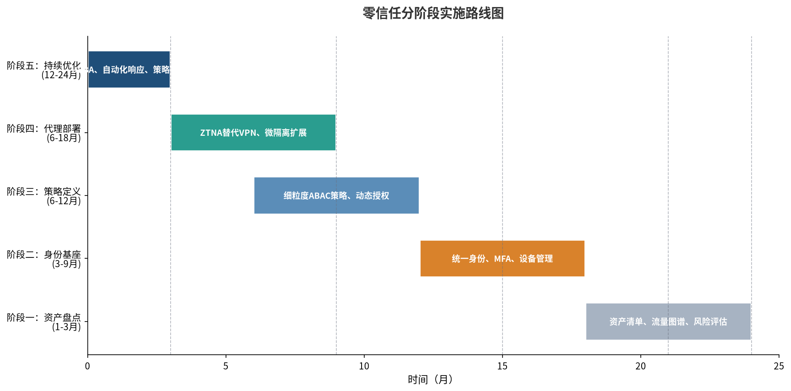
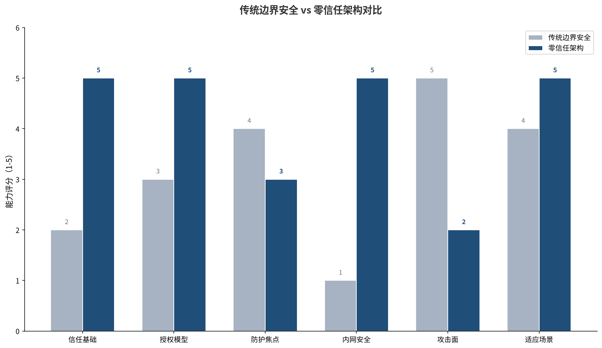
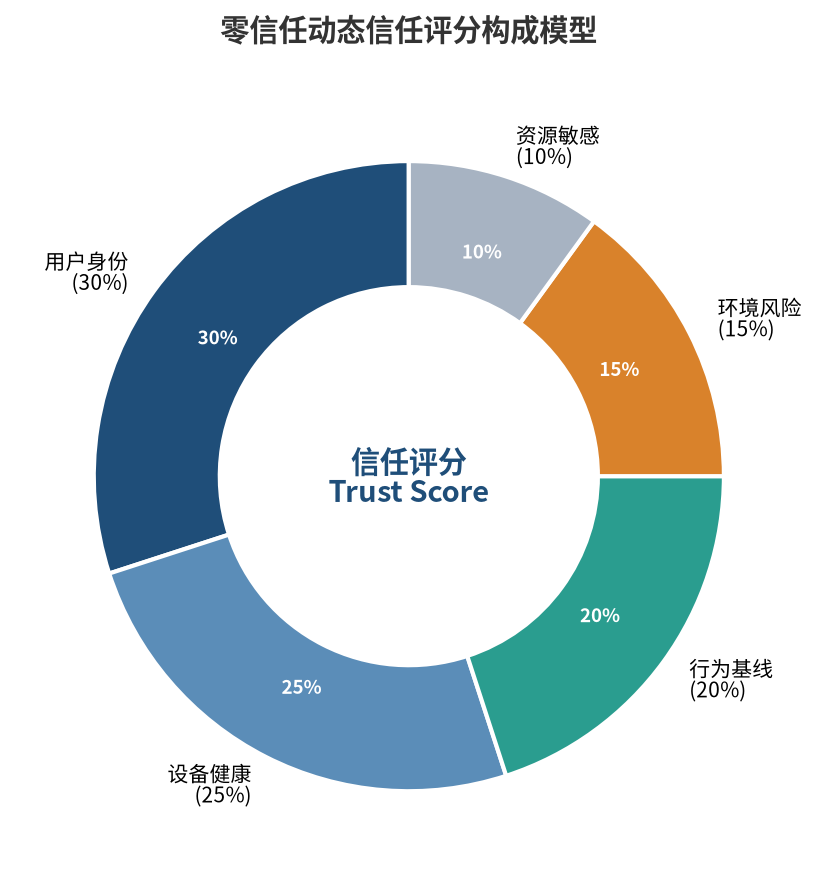
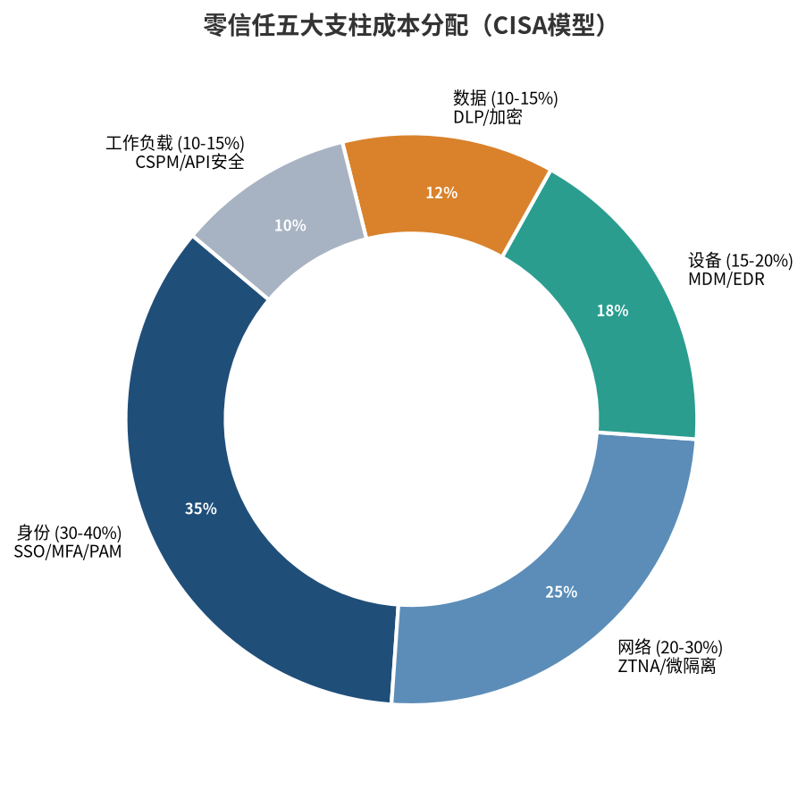

🧠 核心摘要
《零信任网络》不是一本产品说明书，而是一次安全范式的根本转向——将信任的锚点从"网络位置"迁移到"身份+设备+上下文"的动态组合。传统边界安全的失败，本质上不是防火墙技术不够先进，而是信任模型从根上就错了：它把"在不在内网"当成了"可不可信"的判据。当移动办公、云计算、供应链攻击三重冲击消融了物理边界，建立在"内网可信"假设上的整座安全大厦便注定倾覆。
本书的最大价值在于提供了一套从零构建零信任架构的完整方法论——从五大基本假定推导出整个技术体系，从四大信任支柱（设备、用户、应用、流量）构建完整的信任链条，再到渐进式的落地实施路径。对于网络和安全领域的售前工程师来说，这不仅是技术知识的补充，更是安全思维方式的根本升级。
🛡️ 范式转移
信任锚点从"网络位置"转向"身份+设备+上下文"。不是墙不够厚，而是信任模型错了。七成数据泄露发生在内网横向移动阶段。
🔗 信任链条
用户身份是锚点→设备状态是载体→应用授权是边界→流量加密是底线。四者层层递进，缺任何一环，信任判断都是不完整的。
📈 渐进落地
不是推倒重来，而是分三阶段演进：基础阶段（3-9个月）→扩展阶段（6-18个月）→优化阶段（12-24个月）。风险可控、投入可量、效果可见。
💡 三大核心洞察
洞察一：传统安全的病根在信任模型，不在技术强度
边界安全为什么必然失效？不是因为防火墙不够强，而是因为它的底层假设错了——"内网可信"这个前提，在移动办公、云计算、供应链攻击的三重冲击下，已经彻底不成立了。M&M豆模型（外硬内软）决定了：只要边界被突破一次，内网就成了攻击者的自由王国。
边界安全模型试图把攻击者阻挡在可信的内部网络之外，然而零信任模型却认识到这种方法注定会失败，因此，零信任模型首先假设内部网络中同样存在恶意的攻击者，并据此建立安全机制来防范这种威胁。
有统计显示，全球七成以上的数据泄露发生在内网横向移动阶段。这个数据意味着什么？意味着企业花在边界防火墙上的每一分钱，只能防住不到三成的攻击路径。而真正决定数据是否安全的那七成，几乎是裸奔状态。问题的根源不是防火墙不够强，而是信任的锚点错了。
洞察二：零信任三大支柱不是并列关系，而是递进关系
很多人把设备信任、用户信任、应用信任理解为三个并列的模块，但原书的深层逻辑是：三者构成一条层层递进的信任链条。

🔗 信任链条的四层递进
- 第一层：用户身份（锚点）——回答"你是谁"。没有身份就没有信任的主体，是整个体系的地基
- 第二层：设备信任（载体）——回答"你用什么访问"。只有用户身份，无法区分公司电脑还是个人手机
- 第三层：应用信任（边界）——回答"你能访问什么"。访问控制的最终粒度落到应用级而非网络级
- 第四层：流量信任（底线）——回答"传输是否安全"。全流量加密，防止中间人攻击和窃听
缺了任何一环，信任判断都是不完整的——只有用户身份，无法区分是公司电脑还是个人手机；只有设备身份，无法区分是正常操作还是恶意程序；只有应用身份，无法确认操作人的合法性。四者缺一不可，构成完整的信任闭环。
洞察三：零信任落地不是推倒重来，而是渐进式替换
零信任最大的误解是"要把现有网络全部推翻重建"。但无论是原书阐述的实施方法论，还是Google BeyondCorp的真实实践，都证明零信任是一种演进式架构。

📊 零信任落地三阶段
- 基础阶段（3-9个月）：资产盘点+身份底座建设。摸清家底，建好统一身份认证和设备管理
- 扩展阶段（6-18个月）：从高价值资产切入，先观察后执行，部署零信任网关和访问策略
- 优化阶段（12-24个月）：逐步扩大覆盖范围，优化信任评分模型，自动化安全运营
Google BeyondCorp的部署路径就是最好的证明：先集成语关和临时元清单服务，初始策略映射现有基于IP的外网安全模型；随着设备信息增加，逐渐用信任层分配取代基于IP的策略。完全成熟通常需要2-4年时间，但第一个里程碑3-9个月就能达成。对客户来说，这意味着零信任不是一次性的大投入，而是一条风险可控、投入可量、效果可见的演进路线。
⚔️ 范式对比：边界安全 vs 零信任

🔄 六大维度的根本差异
- 信任基础：网络位置（IP地址）→ 身份+设备+上下文
- 核心假设：内网可信，外网不可信 → 所有网络都不可信
- 授权模型：一次性授权，永久有效 → 每次访问都验证，动态授权
- 防护焦点：边界（网络出入口）→ 每个资源、每次访问
- 默认动作：默认放行，黑名单拒绝 → 默认拒绝，白名单放行
- 适应场景：固定办公、物理边界清晰 → 移动办公、云计算、混合环境
从这个对比中可以看出，零信任不是对边界安全的简单升级，而是底层范式的根本替换——就像从地心说到日心说，不是在旧模型上修修补补，而是换了一套全新的坐标系。
📐 零信任的五大基本假定
网络无时无刻不处于危险的环境中
威胁是常态而非例外。安全从"被动防护"转向"主动怀疑"——不相信任何人和任何设备，除非他们证明自己可信。
网络中自始至终存在外部或内部威胁
攻击者可能已经在内网里。零信任的目标不是"不让人进来"，而是"即使有人进来了也寸步难行"。
网络的位置不足以决定网络的可信程度
一句话直接推翻了边界安全的根基。IP地址不能代表信任，能代表信任的是身份——用户身份、设备身份、应用身份。
所有的设备、用户和网络流量都应当经过认证和授权
每一次访问、每一条流量都要验证——就像大楼里的每个房间门口都有一个保安，每次进出都要查证件。
安全策略必须是动态的，并基于尽可能多的数据源计算而来
信任不是一次性授予的，而是持续计算、动态调整的。行为异常了，权限就自动调整。

🎯 对售前工程师的四大价值
💬 话术框架：五步话术法
- 痛点切入：从等保合规/数据泄露/远程办公开场
- 诊断根因：不是防火墙不够强，是信任模型错了
- 方案价值：身份替代位置作为信任锚点
- 路径清晰：分三步走，风险可控投入可量
- 三重收益：安全+效率+合规
🏗️ 差异化：网络原生的零信任
- 网络设备层：交换机/无线作为策略执行点延伸
- 安全产品层：防火墙+分布式防火墙协同
- 身份治理层：Source ID身份中台+OCE认证
- 整合方案：网络+身份+安全三位一体
- 一句话：从网络基础设施原生生长的零信任
⚖️ 异议处理：六大常见质疑
- 已有防火墙 → 不是替代，是补充（大门保安+房间门禁）
- 要换设备 → 不用换，是升级（保护现有投资）
- 影响体验 → 安全与体验平衡（SSO、无感续期）
- 太贵 → 看ROI，分阶段投入（246%三年ROI）
- 中小企业 → 从最基础的开始（方向比对错重要）
- 和VPN区别 → 网络级接入vs应用级访问
📋 合规映射：等保2.0对接
- 安全通信网络：全流量加密+双向认证
- 安全区域边界：微隔离+基于身份的访问控制
- 安全计算环境：身份鉴别+最小权限+持续审计
- 安全管理中心：统一策略管理+信任评分+审计分析
- 等保是合规要求，零信任是最佳技术路径
💰 成本与ROI

📊 客户最关心的几个数字
- 平均ROI：246%（三年），投资回收期约6个月
- 数据泄露成本降低：42.3%，每次泄露平均节省176万美元
- 部署周期：完全成熟2-4年，但3-9个月可见第一个里程碑
- 成本结构：技术工具约40%，实施服务约30%，人员运营约30%
🌟 写在最后
《零信任网络》带给我们的最大启示，不是某一项具体的技术，而是一种思维方式的转变——从"假设安全"到"假设危险"，从"位置信任"到"身份信任"，从"静态防御"到"动态演进"。这种思维方式的转变，比任何技术都更有价值。
对于售前工程师来说，理解这种转变，才能真正理解零信任的价值——不是卖一个新的安全盒子，而是帮客户完成一次安全范式的升级。而这，正是我们这个职业的真正价值所在。
零信任不是终点，而是一条持续演进的道路。就像摩尔定律不是一个定律而是一个持续的过程一样——重要的不是到达某个完美的状态，而是持续地朝着更安全、更智能、更灵活的方向前进。
零信任方案销售的完整工具箱
💬 五步话术法（面向政企/高校客户）
第一步·痛点切入：从客户熟悉的问题开场——等保合规压力、远程办公安全、勒索软件攻击、内网横向移动风险。用客户的语言说话，不要一上来就说"零信任"。
第二步·诊断根因：指出传统方案的局限——不是您做得不好，而是信任模型错了。"内网可信"这个前提已经不成立。七成数据泄露发生在内网横向移动阶段——这是铁证。
第三步·方案价值：零信任从根本上解决问题——信任锚点从位置转向身份，控制粒度从网络级转向应用级，授权方式从一次性转向动态。不是替换现有投资，是"加一层"。
第四步·路径清晰：分三阶段落地——基础（3-9月）→扩展（6-18月）→优化（12-24月）。风险可控、投入可量、效果可见。
第五步·三重收益：安全价值（降低42%泄露成本）+效率价值（不用拨VPN、运维自动化）+合规价值（满足等保2.0等要求）。
🏆 锐捷差异化：网络原生的零信任
- 网络设备层：交换机/无线作为策略执行点，从接入层就实现身份化控制
- 安全产品层：防火墙+分布式防火墙+零信任网关协同，保护现有投资
- 身份治理层：Source ID身份中台+OCE认证，高校等复杂场景深厚积累
- 一句话：其他厂商是"在现有网络之上叠加零信任"，锐捷是"从网络基础设施原生生长出零信任"
⚖️ 六大异议回应
- 已有防火墙：不是替代，是补充。大门保安还要有，但每个房间也要有门禁
- 要换设备：不用换，是升级。现有设备解锁零信任能力，保护投资
- 影响体验：单点登录+无感续期+分级认证，安全与体验可以平衡
- 太贵：看ROI（246%三年回报），分阶段投入，6个月回收期
- 中小企业：不需要一步到位，从最基础的开始，方向比对错重要
- 和VPN区别：VPN是网络级接入（给你大楼钥匙），零信任是应用级访问（每个房间单独门禁）